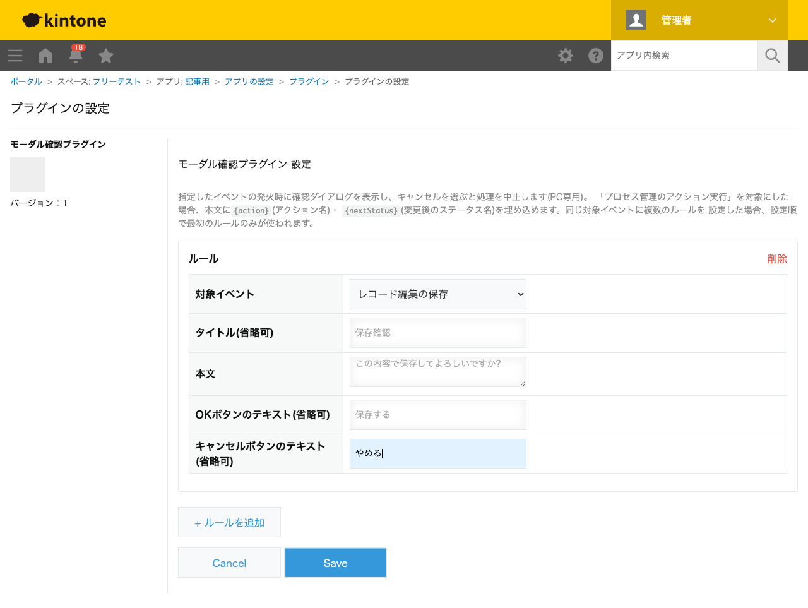
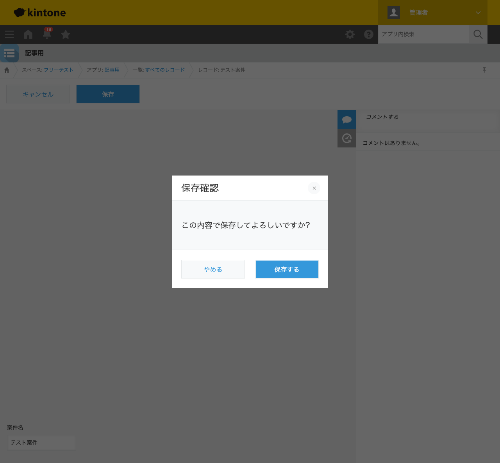

GovAppsプラグイン 安全性を確認できる無料kintoneプラグイン集
重要な案件のレコードを誤って上書き保存してしまったり、削除ボタンを押し間違えてしまったり ――そんなヒヤリとする場面を減らすには、実行前にもう一度確認を挟む仕組みが有効です。 この記事では、無料プラグインでレコードの保存・削除・プロセス管理のアクション実行時に、 独自の文言で確認ダイアログを表示し、キャンセルすると処理を中止する方法を、実際の設定画面と 動作結果つきで解説します。
kintoneの標準機能には、レコードの保存・削除の前に独自の確認ダイアログを表示する機能はありません。
削除操作には標準の確認ポップアップが出ますが、文言は固定で変更できず、保存操作には確認自体が
ありません。JavaScriptカスタマイズを自作すればkintone.showConfirmDialog()で実現
できますが、保存・削除・プロセス管理アクションそれぞれのイベントでキャンセル処理を正しく実装し、
PC・モバイル両対応するのは簡単な作業ではありません。
「保存・削除前に確認ダイアログを表示する」機能を用意する方法は、大きく4つあります。それぞれの 向き不向きをまとめました。
| 方法 | 向いている場合 | 注意点 |
|---|---|---|
| kintone標準機能のみ | 標準の削除確認だけで十分な場合 | 保存時の確認・文言のカスタマイズはできない |
| JavaScriptを自作する | 社内に開発者がいて、独自の確認フローが必要な場合 | 各イベントでのキャンセル処理・PC/モバイル両対応の実装・保守が必要 |
| 有料の他社プラグイン | 予算があり、手厚いサポートを求める場合 | 月額課金が発生する。ソースコードが非公開で、外部通信の有無を利用者側で確認しにくいことが多い |
| GovAppsプラグイン(このプラグイン) | 無料で試したい、社内・庁内でセキュリティを確認してから導入したい場合 | レコード一覧からの削除確認のみPC専用(モバイル版イベントが存在しないため) |
GovAppsのプラグインはすべて無料・広告なしで、追加課金なしで使い続けられます。 ソースコードはGitHubで全公開しているオープンソースなので、 「本当に外部と通信していないか」を自治体・企業のセキュリティ担当者自身の目で確認できます (このプラグインも個別ページにセキュリティレビュー結果を掲載しています)。
モーダル確認プラグインは、対象イベントとダイアログの 文言を設定するだけです。今回は「案件名」を持つアプリで、レコード編集の保存時に確認ダイアログを 表示するよう設定しました。

レコード編集画面で「保存」ボタンを押すと、設定した文言そのままの確認ダイアログが 表示されます。「やめる」を押すとレコードは保存されず、そのまま編集画面に留まります。

もう一度保存ボタンを押し、今度は「保存する」を選ぶと、通常どおりレコードが保存されます。 実際に検証した際も、「やめる」を選んだ回はレコードのリビジョンが変わらず(保存されず)、 「保存する」を選んだ回だけリビジョンが進み、保存が実行されたことを確認できました。
{action}(実行したアクション名)・{nextStatus}(変更後のステータス名)というプレースホルダーを埋め込めます。kintone.showConfirmDialog()、モバイルではkintone.mobile.showConfirmBottomSheet()を使っており、外部サーバーへの通信は一切行いません(プラグイン個別ページのセキュリティレビューサマリ参照)。